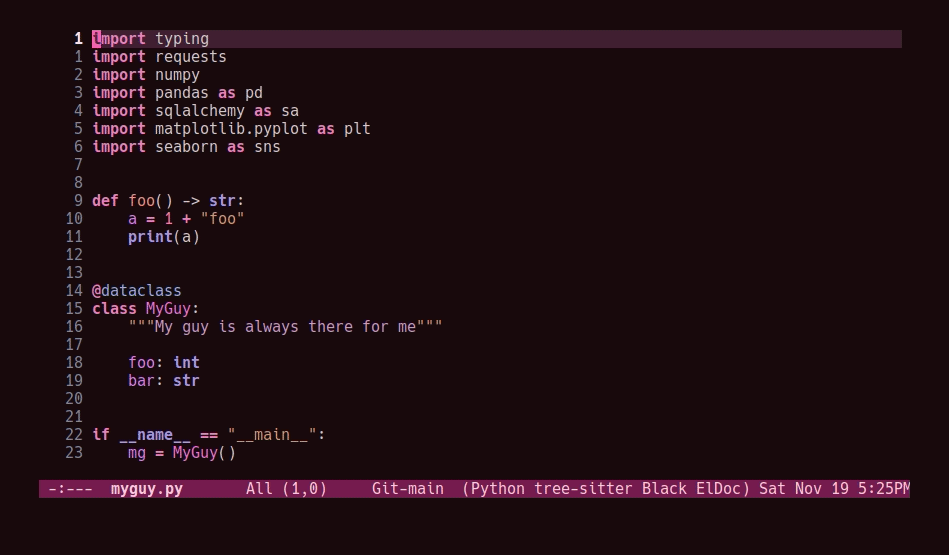

My most reliable setup for developing Python projects on remote hosts with LSP support so far has been with [eglot](https://github.com/joaotavora/eglot) and [pyright](https://github.com/microsoft/pyright). I've also tried [lsp-mode](https://emacs-lsp.github.io/lsp-mode/) with `pyright`, and both of `lsp-mode` and `eglot` with the [python-lsp-server](https://github.com/python-lsp/python-lsp-server), however I've landed on `eglot` + `pyright` for a few reasons:
eglot requires zero configuration to work over Tramp, unlike
`lsp-mode`.
eglot will have built-in support in future Emacs versions.
This may or may not be worth a damn to other Emacs users.
One hiccup remained though: `pyright` is typically a system or user installation, not something you install per virtual environment. Getting `pyright` to see the virtual environment of my choosing , and correctly report which dependencies are installed was a bit of a hassle, but I think my favorite solution so far has been to configure the virtual environment through the `pyrightconfig.json` file at the root of my project, and just have this file ignored by git. Typically, `pyrightconfig.json` looks like this:
{
"venvPath": "/absolute/path/to/dir/",
"venv": ".venv"
}
I'm pretty happy with the other default configurations for `pyright`, so I leave those be, and just configure the virtual environment path this way. What was annoying me, though, is that I'd need to write out this absolute path for each machine I clone a project into, since relative paths and shortcuts using `~` aren't supported. Much better if we can just have Emacs do it for us.
In the spirit of other Emacs/Python tools like `pythonic` and `pyvenv` for activating virtual environments, I wanted something that would just prompt for a directory using `completing-read`, and then populate the contents of `pyrightconfig.json` automatically based on my selection.
pyrightconfig.json
Edit 2022-11-20: Thanks to Mickey Petersen
of mastering emacs for
pointing out that
json-encode
exists. I originally had my own
function pyrightconfig--json-contents here, but I've modified
the function below to use this built-in version instead.
We really just need to do three things:
It's worth mentioning that we /must/ put this file in the VC root, otherwise
eglot just won't pick it up. For my purposes, the VC system
will always be git, so I'm going to make an assumption here and use
=vc-git-root= instead of something more generic.
(defun pyrightconfig-write (virtualenv)
(interactive "DEnv: ")
(let* (;; file-truename and tramp-file-local-name ensure that neither `~' nor
;; the Tramp prefix (e.g. "/ssh:my-host:") wind up in the final
;; absolute directory path.
(venv-dir (tramp-file-local-name (file-truename virtualenv)))
;; Given something like /path/to/.venv/, this strips off the trailing `/'.
(venv-file-name (directory-file-name venv-dir))
;; Naming convention for venvPath matches the field for
;; pyrightconfig.json. `file-name-directory' gets us the parent path
;; (one above .venv).
(venvPath (file-name-directory venv-file-name))
;; Grabs just the `.venv' off the end of the venv-file-name.
(venv (file-name-base venv-file-name))
;; Eglot demands that `pyrightconfig.json' is in the project root
;; folder.
(base-dir (vc-git-root default-directory))
(out-file (expand-file-name "pyrightconfig.json" base-dir))
;; Finally, get a string with the JSON payload.
(out-contents (json-encode (list :venvPath venvPath :venv venv))))
;; Emacs uses buffers for everything. This creates a temp buffer, inserts
;; the JSON payload, then flushes that content to final `pyrightconfig.json'
;; location
(with-temp-file out-file (insert out-contents))))
Here's a quick demo where I interactively choose a virtual environment directory, write the ~pyrightconfig.json~, launch ~eglot~, and use =M-.= to leverage the LSP's jump-to-definition of a library, then show that the library we jumped to is indeed inside the virtual environment.
